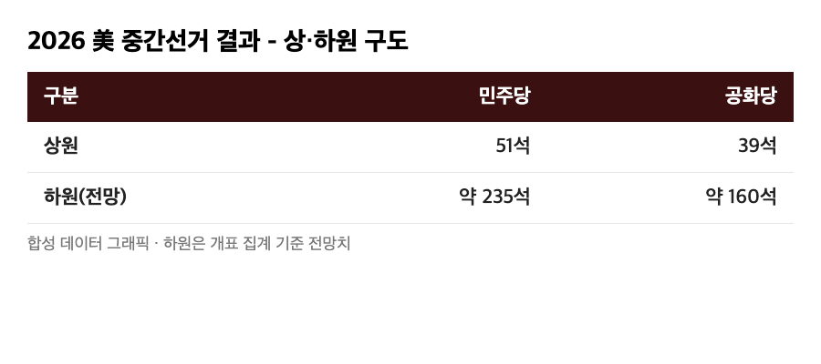
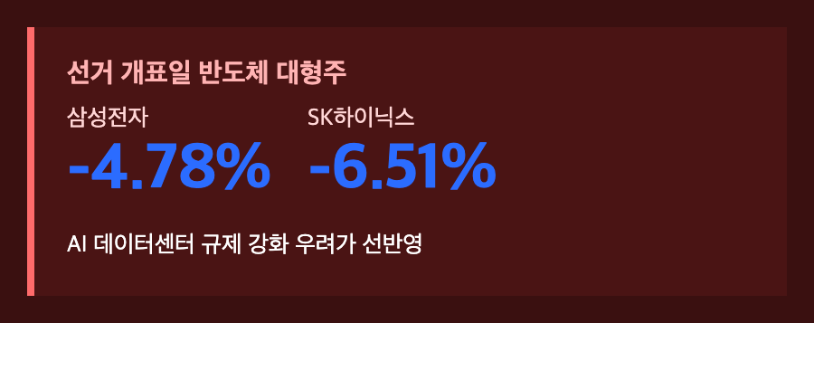
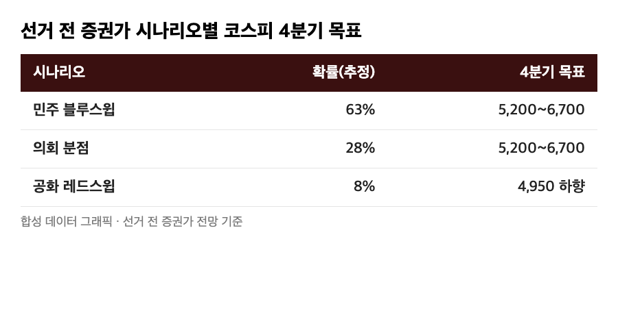
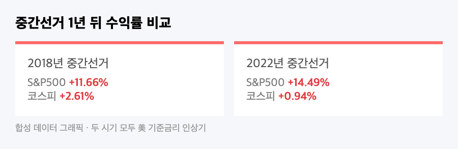

어젯밤부터 미국 중간선거 개표 속보 틀어놓고 있었는데요, 오늘 장 열리자마자 코스피가 2%대로 치솟는 거 보고 "오, 이번엔 호재로 가나" 했습니다. 근데 점심 무렵 되니까 그 상승분이 전부 날아가고 오히려 마이너스로 꺾여 있더라고요. 저도 들고 있는 삼성전자가 딱 이 흐름 한가운데 있어서, 오늘은 선거 결과가 국장에 실제로 어떻게 꽂혔는지 숫자로 정리해봤어요.
🇺🇸 선거부터 정리하면 — 민주당, 상·하원 다 가져갔다
|
상원 민주 51석 : 공화 39석 / 하원 민주 약 235석(최대 242석 전망) : 공화 160석 |

11월 3일(현지시간) 인디애나·켄터키주부터 시작된 투표가 한국시간 4일 오전부터 순차적으로 마감됐는데, 결과는 생각보다 깔끔했어요. 텍사스·캔자스에서 각각 첫 민주당 상원의원이 나왔고, 오하이오·아이오와·노스캐롤라이나·사우스캐롤라이나까지 뒤집히면서 상원도 민주당이 과반을 확보했습니다. 하원은 하버드대 선거 모델 기준 민주당 승리 확률이 96%까지 올라갔다고 하니, 사실상 '블루 스윕'이 확정된 셈이에요. 선거 전엔 대신증권 등에서 "승부처는 상원, 여론조사가 1.4%p만 빗나가도 결과가 뒤집힐 수 있다"는 신중한 전망도 나왔었는데, 실제로는 그보다 훨씬 깨끗하게 민주당 쪽으로 쏠렸습니다.
📉 코스피, 오늘 하루 7%p 가까이 왕복했다
|
코스피 장중 5,786.13(+2.43%) → 오후 1시 5,432.24(-3.83%) |
개장하자마자 코스피가 전일 대비 137.34포인트(+2.43%) 오른 5,786.13까지 치고 올라가면서 한때 5,800선을 넘봤어요. "선거 불확실성 해소니까 오르는구나" 싶었는데, 민주당 우세가 확실해지는 시점부터 분위기가 완전히 바뀌더라고요. 오후 1시 기준으로는 전일 대비 216.55포인트(-3.83%) 내린 5,432.24까지 밀렸습니다. 하루 사이에 고점과 저점을 합치면 7%p 가까이 움직인 거예요. 전날(11/3)에도 코스피 변동성지수(VKOSPI)가 54.08까지 치솟았었는데, 이게 10월 15일 코스피가 하루 만에 7% 급락했던 그날 이후 최고치라고 해요. 선거 하나 때문에 이틀째 롤러코스터를 탄 셈이죠.
🔻 급락 원인 — AI 데이터센터 규제 우려, 그리고 제 삼성전자
|
삼성전자 -4.78% / SK하이닉스 -6.51% |

오전 상승분을 다 반납하게 만든 주범은 반도체였어요. 유안타증권 연구원은 "민주당의 의회 장악과 주요 주지사 선거 결과에 따른 (AI 데이터센터) 규제 강화 가능성이 반영되고 있다"고 짚었는데, 실제로 민주당 지지층의 80%가 AI 규제 강화에 찬성하고 69%가 데이터센터 건설 제한에 찬성한다는 여론조사가 있다 보니 시장이 바로 겁을 먹은 거죠. 저도 삼성전자 25주 들고 있는 입장에서 오늘 -4.78%는 꽤 아프긴 한데, "이게 또 하루짜리 공포인지 진짜 구조적인 변화인지" 구분해봐야 할 것 같아요. 수급을 보면 개인(+1조2,752억원)과 기관(+3,249억원)은 오히려 사면서 버텼는데, 외국인이 1조8,591억원을 순매도하면서 지수를 끌어내렸거든요. 같은 날 다른 집계에서는 외국인·기관 합산 '2조 투매'라는 표현도 나왔고, 그 와중에 AI·배터리는 추락했지만 조선주는 비교적 버텼다는 얘기도 있었어요.
🔮 선거 전 증권가가 그려놨던 세 가지 시나리오

사실 선거 전부터 증권가는 결과별로 코스피 그림을 다르게 그려놨었어요.
| 시나리오 | 선거 전 확률(추정) | 4분기 코스피 목표 | 핵심 근거 |
|---|---|---|---|
| 민주 '블루 스윕' | 63% | 5,200~6,700 | 국채금리·달러 안정, 연준 견제로 불확실성 감소 |
| 의회 분점 | 28% | 5,200~6,700 (기존 유지) | - |
| 공화 '레드 스윕' | 8% | 4,950까지 하향 | 재정지출·관세 확대로 금리 15~30bp 상승 |
실제 결과가 가장 확률 높게 점쳐졌던 '블루 스윕'으로 나왔으니, 표대로라면 코스피엔 나쁘지 않은 그림이어야 하는데요. 그런데 막상 오늘 장에서는 반도체 규제 우려가 먼저 튀어나오면서 정반대로 급락했어요. 선거 전 전망과 선거 당일 실제 반응이 이렇게 엇갈릴 수 있다는 걸 눈으로 본 셈이죠. 한지영 키움증권 연구원도 "증시 현금흐름 악화의 근본 원인은 정책 불확실성이 아니라 AI 투자에 대한 의구심"이라고 했는데, 오늘 장은 그 말이 딱 맞아떨어진 날 같아요.
📊 과거에도 중간선거 뒤 코스피가 이렇게 흔들렸을까

역사적으로 보면 미국 중간선거는 S&P500에는 거의 항상 호재였어요. 1958년부터 2022년까지 17번의 중간선거 모두 1년 뒤 S&P500이 올랐고 평균 상승률이 13.98%였다고 하니, 17전 17승인 거죠. 코스피도 1998년 이후 중간선거 해 11월엔 7번 모두 올랐고 평균 +5.72%였대요. 다만 최근 두 번은 얘기가 좀 달라요. 2018년 중간선거 1년 뒤 S&P500은 +11.66%였는데 코스피는 +2.61%에 그쳤고, 2022년엔 S&P500 +14.49% 대비 코스피는 +0.94%로 거의 제자리걸음이었어요. 공통점은 두 시기 다 미국이 기준금리를 올리던 시기였다는 거예요. 그러니까 "선거 자체"보다 "그 뒤 금리가 어디로 가는지"가 코스피한텐 더 중요한 변수였다는 얘기고, 오늘 급락도 그 연장선에서 봐야 할 것 같아요.
🏭 그래도 관세·보조금은 생각보다 안 바뀔 수도 있다
관세·통상은 원래 의회 권한이 아니라 대통령 고유 권한 영역이라, 의회 구도가 바뀌어도 트럼프 대통령의 관세 기조 자체는 크게 안 흔들릴 거라는 분석이 많아요. 즉 블루 스윕이 한국 기업에 대한 통상 압박을 자동으로 풀어주진 않는다는 뜻이죠. 반도체 보조금도 비슷해요 — 미 상무부가 이미 삼성전자에 최대 47억4,500만달러, SK하이닉스에 4억5,800만달러 직접 보조금을 확정해둔 상태라, 양당 모두 미국 내 공장 유치를 원하는 만큼 이 돈이 갑자기 사라질 가능성은 낮다고 봐요. 반대로 친환경에너지·이차전지(한화솔루션, LG에너지솔루션, 삼성SDI 등)는 투자세액공제(ITC) 부활 기대로 수혜주로 꼽히고 있고, 조선업은 미·공화당 색이 강했던 MASGA 프로젝트 추진력 약화 우려가 같이 걸려있는 상태예요.
마무리하며
오늘 하루만 놓고 보면 코스피는 +2.43%에서 -3.83%까지, 왕복 7%p 가까이 움직였고 주범은 반도체 규제 우려였어요. 역사적으로는 중간선거 뒤 증시가 오르는 게 압도적으로 많았지만, 오늘 보니 그 '역사'가 당장 내일 숫자를 보장해주진 않는다는 걸 다시 느꼈습니다. 금리랑 AI 투자 분위기가 어떻게 흘러가는지가 결국 더 중요한 변수일 것 같고요. 삼성전자 들고 있는 저로서는 이번 주 반도체 관련 추가 뉴스부터 챙겨봐야겠습니다 🫠